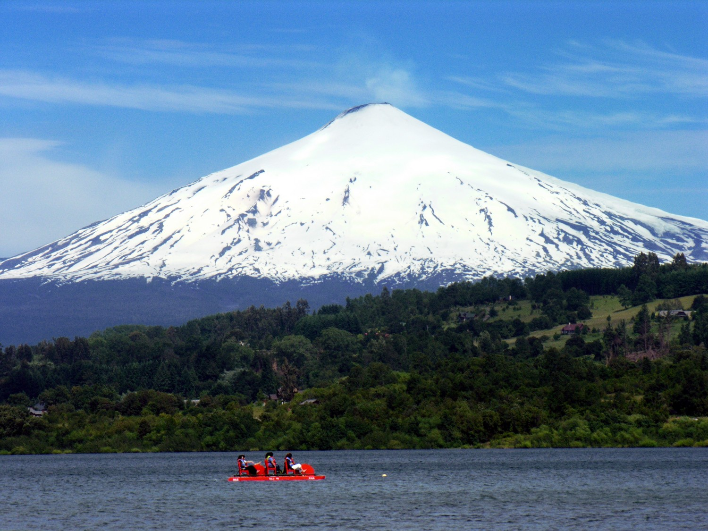
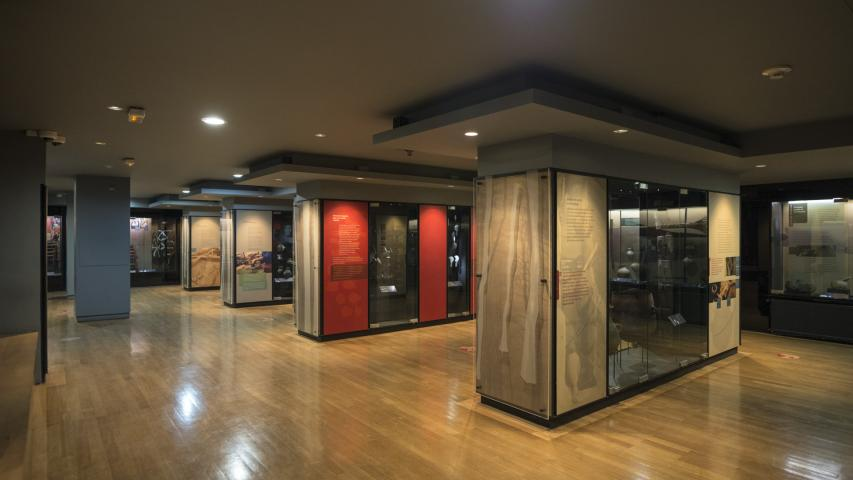
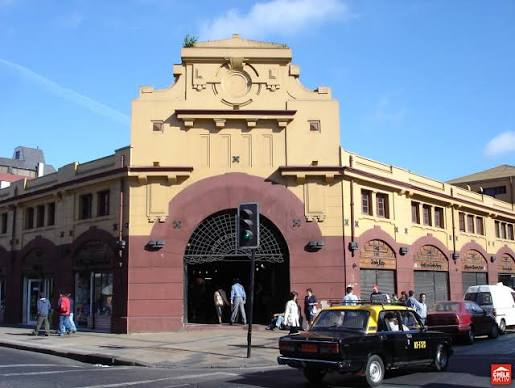
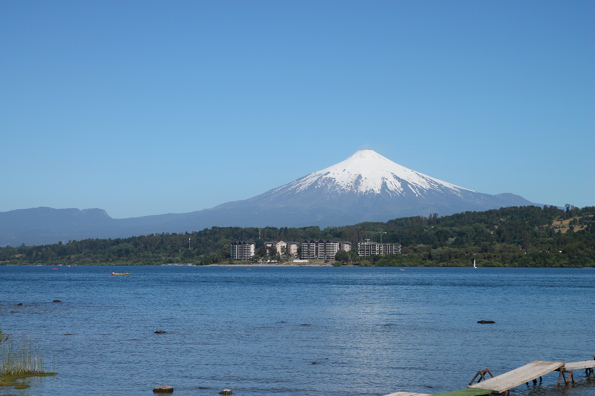
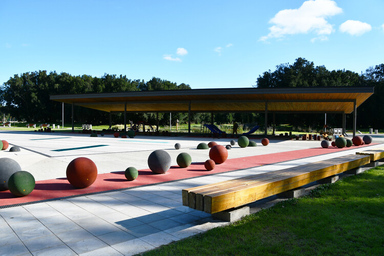
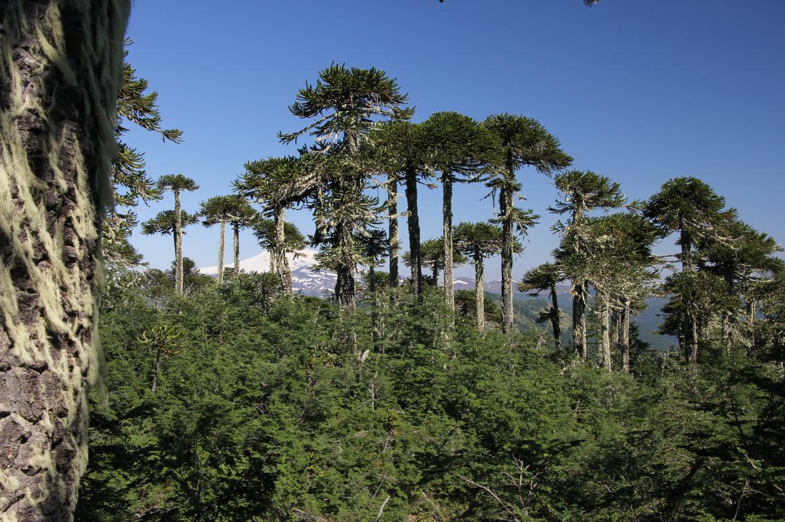
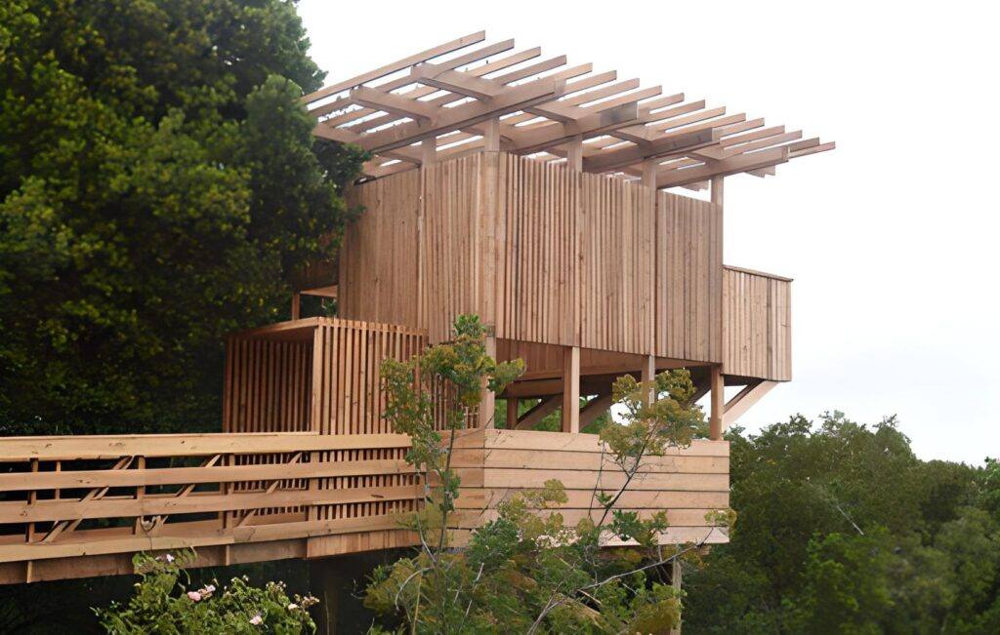

1
🌿 naturaleza
1
🌿 naturaleza
Parque Nacional Conguillío
★★★★★ 4.9
👁 48.3k visitas
1
🌿 naturaleza
★★★★★ 4.9
👁 48.3k visitas

2★★★★★★ 4.8
👁 35.1k visitas

3★★★★⯪ 4.6
👁 29.8k visitas
🥇 N°1 — PARQUE NACIONAL CONGUILLÍO
El parque más icónico de La Araucanía. Araucarias milenarias, el volcán Llaima activo y el espectacular lago Conguillío hacen de este destino imperdible para senderistas, fotógrafos y amantes de la naturaleza.

N°4★★★★⯪ 4.5

N°5★★★★⯪ 4.5

N°6★★★★⯪ 4.3

N°7★★★★☆ 4.0

N°8★★★★☆ 4.0